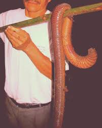

The Mongolian death worm (Mongolian: олгой-хорхой, olgoi-khorkhoi, "large intestine worm") is a creature alleged to exist in the Gobi Desert.
"It is shaped like a sausage about two feet long, has no head nor leg and it is so poisonous that merely to touch it means instant death. It lives in the most desolate parts of the Gobi Desert."
The worm is said to inhabit the western or southern Gobi. In the 1987 book Altajn Tsaadakh Govd, Ivan Mackerle cites a Mongolian legend which described the creature as travelling underground, creating waves of sand on the surface which allow it to be detected. It is said it can kill at a distance, either by spraying a venom at its prey or by means of electric discharge. It primarily lives and burrows underground, only rarely coming to the surface.
I traveled to the Gobi Desert in search of this big worm. I ran around in the sand a lot. It is a desert. There is a lot of sand. I thought I found the mongolian death worm at one point, but it turned out to be a plain old worm. I may return to the Gobi Desert in the future to find this worm, but probably not. I'm pretty sure they just made it up. Imagine a worm killing you. Hardly seems possible. A worm is one of the most pathetic creatures alive, surely it wouldn't be able to kill a human. If a worm tried to kill me I would probably just squish it. It's just a worm.